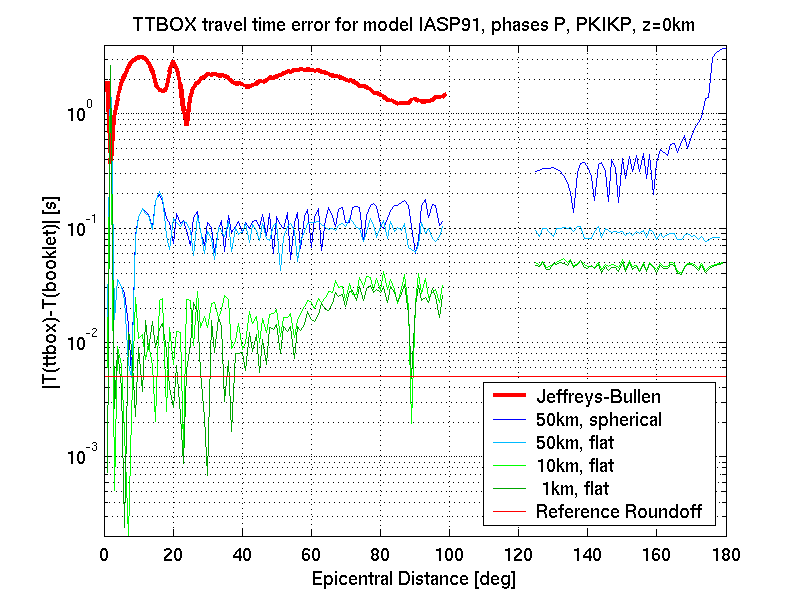

|
| Travel Time Error for S and SKIKS rays. |
The plots below show travel time errors with respect to the IASP91 tables (Kennett, 1991) for P, S, PKIKP, and SKIKS rays computed with different model discretizations. TTBOX does not yet compute Pdiff and Sdiff phases, what causes a hole in the distance range from 100° to the beginning of the core phase.
The thick red line on top of the plots is the difference between Travel times of Jeffreys and Bullen as given in their printed tables (1940) and the IASP91 tables. A minimum requirement for travel time software is that different models produce different travel times, so the numerical error of computed times has to be smaller than the difference between models. It might be necessary to tune model discretization accordingly.
For P phases, even with the worst discretization used here (50km steps, equidistant in spherical coordinates), the TTBOX error is one order of magnitude below this threshold. But for S rays, the difference between JB and IASP91 travel times itself becomes rather small in a distance range from about 49° to about 73°. Thus, to distinguish the models by their TTBOX S travel times, the depth sampling has to be better than in the case for P times, although the error made by TTBOX is about the same.
The thin red line in the lower portion of the plots is the roundoff error of the IASP91 tables, which is due to rounding to 0.01s. It is not desireable to make the difference between TTBOX and reference travel times arbitrary small, since this would mean to reproduce the roundoff error. A plot of true travel times (computed with perfect software on an ideal computer) would produce a curve which varies randomly between zero and the roundoff level. This is achieved only in few cases and only at distances closer than 40°.
With "spherical" sampling, which means that depth samples are equidistant in radius coordinates, the error increases with epicentral distance. This is because larger distance means greater turning point depth of the ray. At greater depth, the rays get closer to the coordinate singularity of the Flat Earth Transform. Switching to "flat" sampling, which means that depth samples are equidistant in Flat Earth coordinates, removes this problem completely, as the comparison between dark blue and light blue lines demonstrates.
The dark green and light green lines show the error for "flat" sampling with 1km and 10km sampling distance, respectively. The small differences between these two lines means that the error curve for 1km sampling shows the sum of type I, II, and III errors, which is probably dominated by the type III errors (errors due to formulation of source code), whereas errors due to model discretization or poor choice of ray parameter may be neglected. At small distances, the remaining error is close to the optimum defined by the reference's roundoff. At larger distances, the deviation is about one order of magnitude larger (the deviation coincidentially corresponds to the sampling interval of 20Hz data).
The large error peak at an epicentral distance of 2° (exactly) is caused by the fact that TTBOX does not handle head waves, whereas the IASP91 booklet gives Pn times for this distance.
|  |
| Travel Time Error for P and PKIKP rays. |
|
| Travel Time Error for S and SKIKS rays. |
Travel time errors have also been computed for PcP phases (again for surface focus). These are less sensitive to the sampling than P and S are. Even for 50km/spherical sampling, the difference between computed travel times and the IASP91 reference are only about half of the error found for P and S. The error is also much less dependent on epicentral distance. The reason probably is that the number of layers covered by PcP is independent of epicentral distance.
 |
| Travel Time Error for PcP rays. |